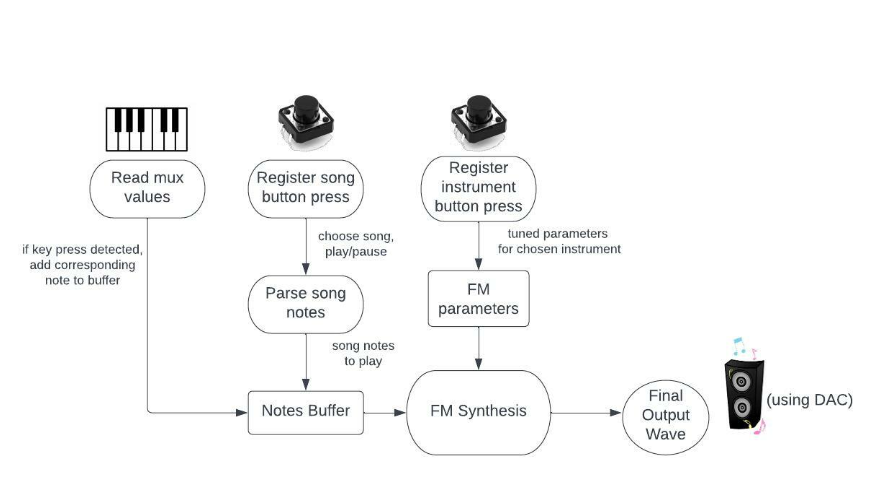

At a high-level, our project structure is shown in the following block diagram. There are 3 different types of inputs: Physical key presses, song button presses, and instrument button presses. Each of these modify either the notes to be played (stored in the notes buffer), or the parameters used in FM synthesis. The FM Synthesis generates a final output wave that is sent to the speakers through the DAC.
In our project, digitally producing the instrument sounds is based on Frequency Modulation Synthesis to compute amplitude values for a note at a particular frequency, using additive synthesis to combine notes at different frequencies into a single output waveform.
Frequency Modulation (FM) synthesis is a more complicated method of sound synthesis which involves modulating a waveform using another waveform. Two waveforms are generated, and one is used to modulate the other. Each of the waveforms is controlled by a logic structure which sets them differently based on how long the note has been played, and the relevant attack,sustain, and decay parameters.
At each time step the modulating waveform is calculated first, and then it’s amplitude is used to determine how far to step the main waveform along a precalculated sine table. This causes the mainwave to progress through the sinetable at different speeds based on the value of the modulating waveform. This modulated frequency can better simulate many instruments when compared to the single pitch that the basic synthesis algorithm generates.
To make playing multiple notes simultaneously possible, and to avoid needing to constantly recalculate certain values we initialize a variety of arrays to handle all of the possible notes. Each pitch that can be played is represented by a singular index. This makes it easy to save the appropriate parameters for each note’s wave form between calculations, and also means that we synthesize multiple output signals. We use additive synthesis to combine these signals into one output signal to send to the DAC. To improve efficiency we also included a buffer array which holds the indexes of the currently active notes. This allows us to skip iterating over notes which are not currently being played.
For playing notes at the same time, we used the principle of additive synthesis to add together all of the amplitude values to create a sound comprising all the frequencies (for example, for playing a chord). This is simple, and only requires that at each time step we sum the amplitudes of every note that is playing. We then divide by the number of notes playing to normalize the volume. Without normalizing the output signal could spike in volume when notes are pressed or released. Additionally the DAC expects a signal within a specific range, so exceeding this range can lead to undesired behavior. This normalized accumulated wave was used as the final output to the DAC.
A Musical Instrument Digital Interface (MIDI) file is a widely accepted format to store music. Unlike an mp3 or wav file it does not contain real audio data, but instead the notes played, their timing, duration, and desired loudness, in sequence. Since it does not store audio data, it is much smaller in size than eg. an alternative mp3 file, making it ideal for our purpose with limited data storage.
It is also easily compatible with different instruments, simply by playing the frequency corresponding to the note on the particular instrument. Further, this allows easy changes in temp based on the user’s preference.
Each MIDI note number is mapped to a particular frequency, corresponding to a note. For example, MIDI note number 60 corresponds to middle C on the piano (C4). We used the following formula to map MIDI note numbers to a frequency used for FM synthesis: f = 440 * 2^((n - 69) / 12)
We initially planned to use capacitive touch sensing so that simply touching the keys would register as a key press. Capacitive touch sensing utilizes an RC circuit to detect when a contact is touched. By placing a resistor in line with a plate of metal that acts as a capacitor an RC circuit is created. If it is connected to a GPIO pin it can be powered to charge the circuit. The pin can then be set as an input so that it can read the voltage as it decays. Since the rate of decay is related to the value of the capacitor and the resistance is known, the capacitance can be calculated. When the plate of metal is touched the capacitance changes, which changes the decay rate, which can be detected by the controller.
During implementation we encountered issues. The RP2040’s analog input could not reliably register touch, and each reading required multiple analog reads and precise time keeping. In response to this, we pivoted our plan and used human conductance to allow a similar effect. We placed a 1 mega ohm pullup resistor on the input. Then, when a human touches the contact while grounding themselves they close the circuit with their body pulling the sensor reading low.
The low power involved insures safety in normal use cases. According to OSHA the resistance of a human body ranges in the magnitude of 100,000 ohms while the skin is dry and unbroken. The RP2040 runs on 3.3 volt logic, although the power source can be 5v if supplied through the micro usb port. Even if there were a massive short and the 5v supply were routed through the human conductor the current would remain significantly below 1 ma, which is the point at which humans start to notice the electricity. Currents of up to 5 ma do not immediately cause injuries, which gives us a large factor of safety. However, out of an abundance of caution we recommend that individuals who may be at increased risk from electrical sources refrain from using the RPiano.
Since the RP2040 only has 28 GPIO pins, we needed to multiplex the inputs from the keyboard in order to have all of the functionality we wanted. We chose to use two 16x1 analog multiplexers (cd74hc4067). The multiplexers required 4 GPIO pins to select which of the 16 inputs should be passed through to the common output. We were able to reuse the same selector signal for both of the muxes. This meant that they always selected the same chanel as each other, but since we read the input with separate analog input pins this simply meant that we made two analog reads at each selector signal configuration.
This system enabled us to utilize 29 analog inputs while using only four selector pins and two input pins, which freed up the other pins on the RP2040 to handle the other button inputs, and the speaker output. With additional multiplexers we could have expanded the sensing capabilities to 64 keys with only 2 additional analog input pins.
We used a MCP4802 digital to analog converter (DAC) to send our output signal from the RP2040 to a set of speakers. The DAC uses the Serial Peripheral Interface (SPI) to take digital input from the RP2040 and convert it to analog signal. This allows us to control a speaker from the RP2040.